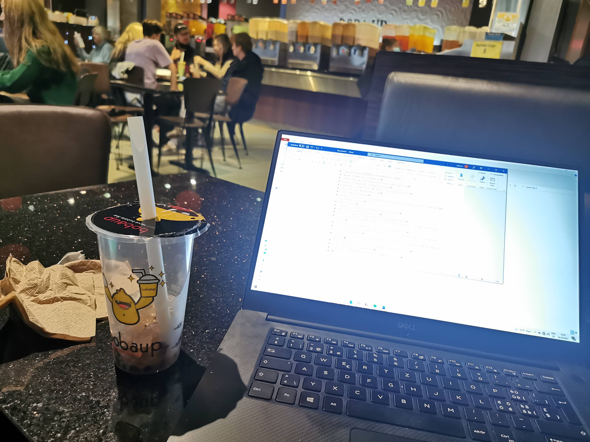
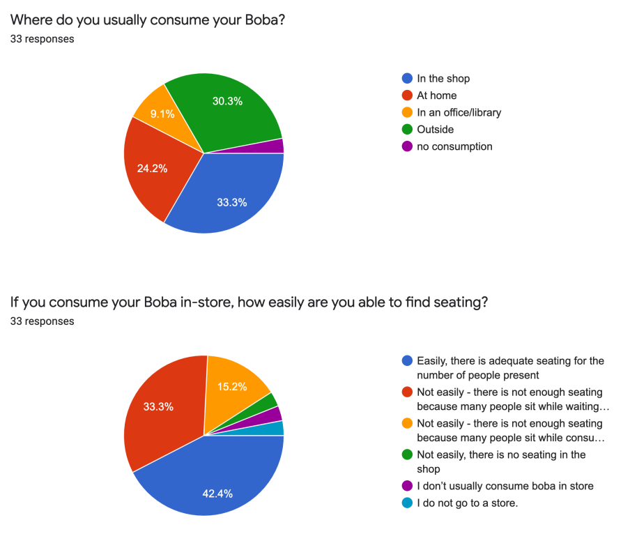
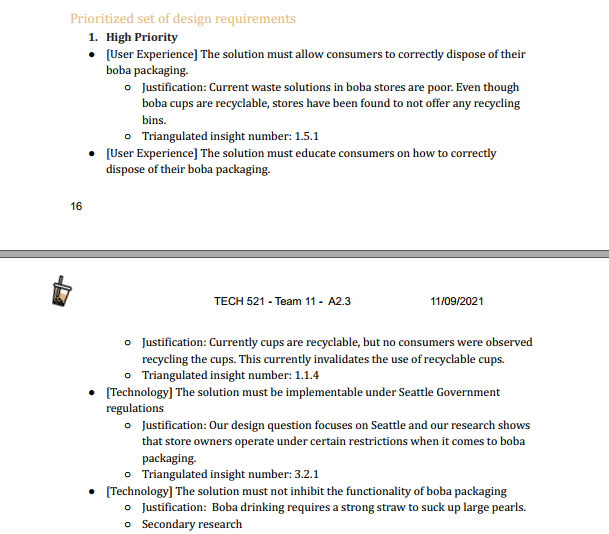
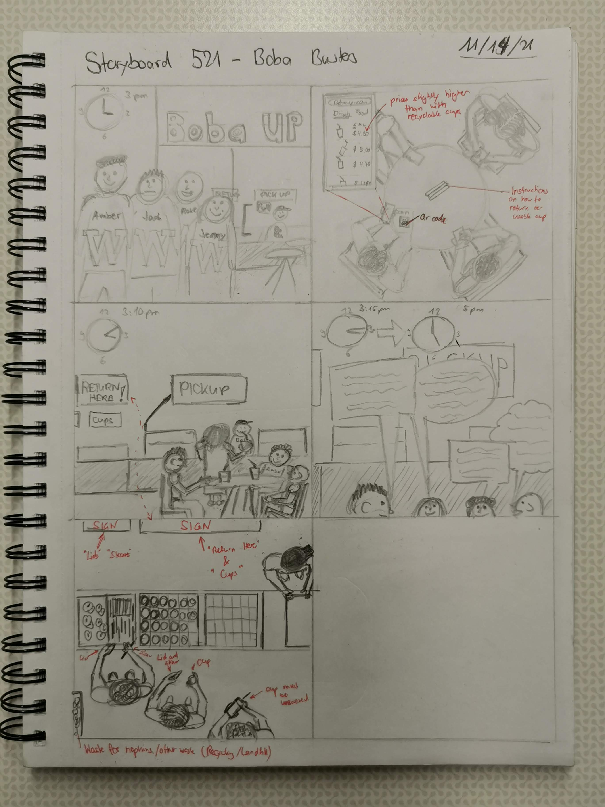
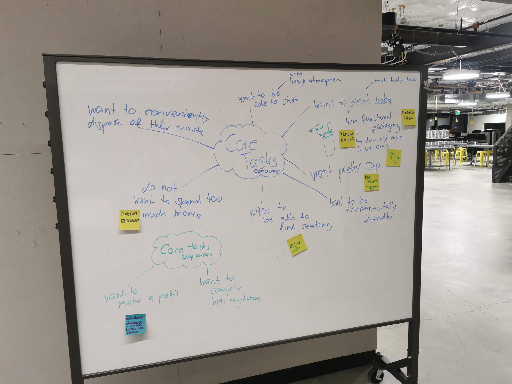
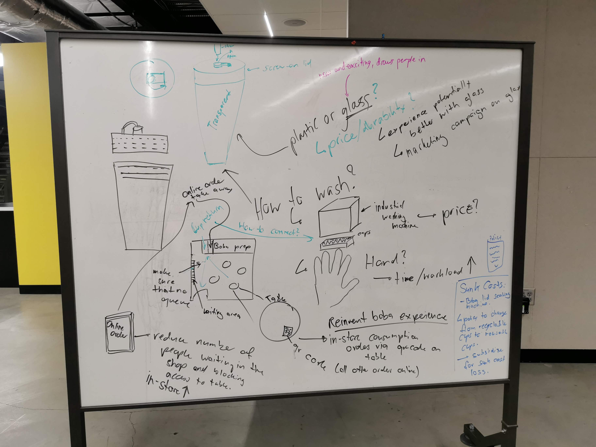
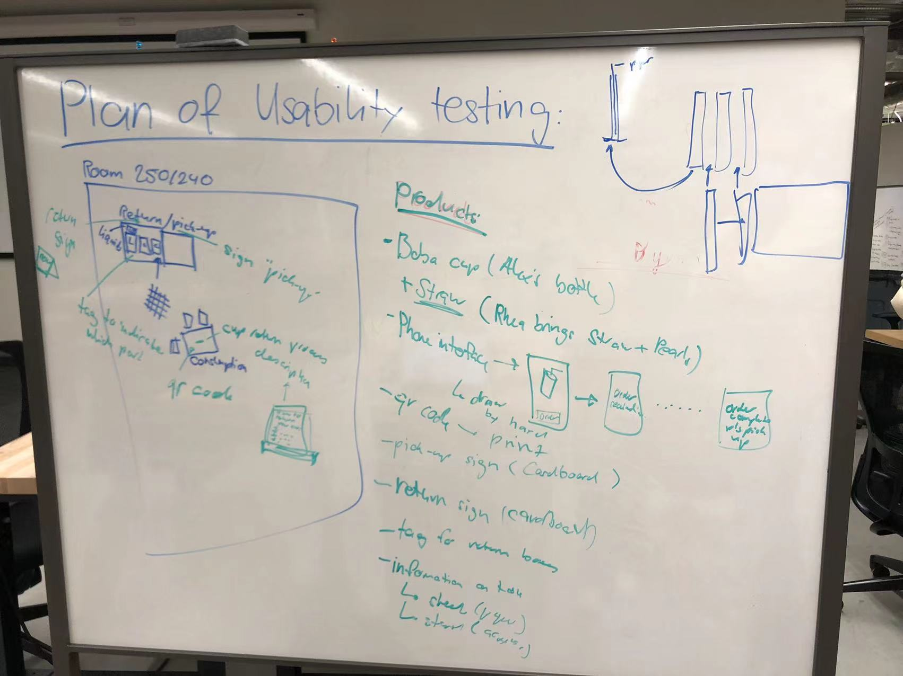
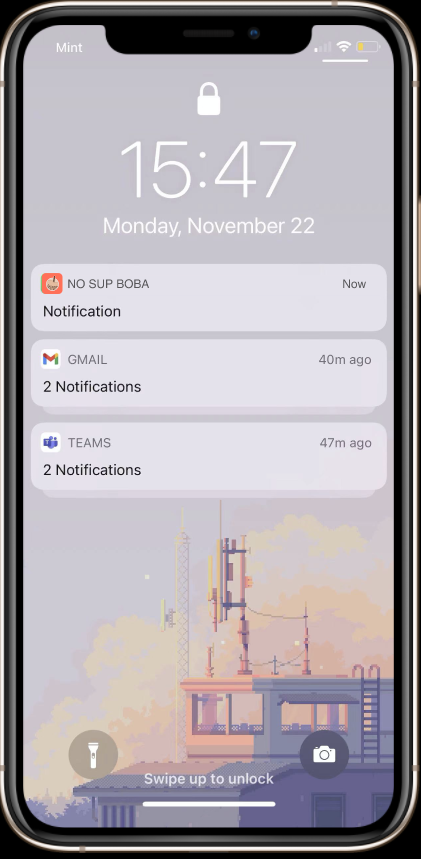
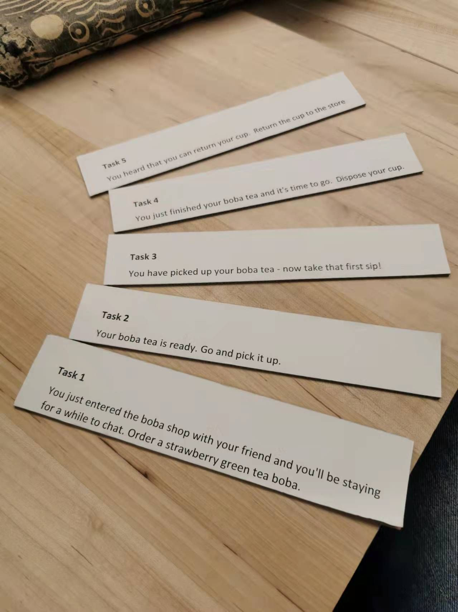
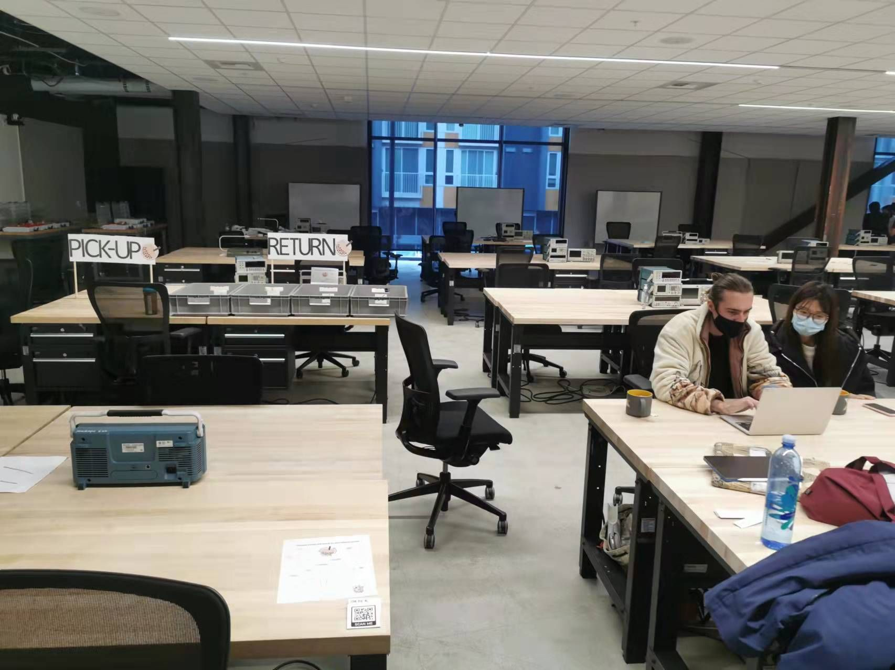

Process
This page illustrates the different phases of our project in the domain of disposable (aka single-use) plastics. Please check out the other pages if you want to learn more about my role in the team (Team), a reflection on the course as a whole (Final Reflection), or the final prototype (Final Prototype).
Stage 1: Framing & Scoping
Motivation
Working on something you love is a joy. We all love bubble tea, it is everywhere and it is deeply unsustainable. Once we were sure that there's a great single-use plastics problem in the bubble tea industry, we all felt that this is the perfect topic to work on for our 521 class.

Secondary Research - Backing our Problem and Refining Our First Design Question
Approach & Results: As we were a team of three, we simply split the topics we had to research into three parts: The justification of our identified problem, the stakeholders/system components, and research questions. We researched on the internet, summed up and presented our results using powerpoint.
My Role: Splitting up the groupwork, researching stakeholders, doing final presentation touch-ups, presenting.
Reflection: We quickly found data that justified our problem and got useful feedback from our instructor. She pointed out that it is not clear if the problem is a recylcing problem or a packaging design problem. In general, the presentation was very helpful and while working on the other assignments, I often used it as a knowledge collection. We now knew what we do not know and were able to come up with a first design question. In future projects I will definitely stress the importance of solid secondary research as a fundamental part to navigating a design cycle.
How to minimize the impact of single-use plastic usage of regular bubble tea consumers in Seattle?
-our first design question based on secondary research
Stage 2: Requirements Engineering

Primary Research - Filling in the Knowledge Gaps
Approach & Results: Our primary research consisted of two separate parts. On one hand, all three team members did a field study and observed at three boba shops at different locations in Seattle and Bellevue where we hoped to meet the different user groups found in our secondary research. On the other hand, we conducted a survey to later be able to prioritize our requirements with quantitative data. We also went out into the field again and surveyed boba stores owners for their behaviors to gather more data on their perspectives. A key finding of our secondary research was the fact that there were two user groups that differ vastly in their behavior regarding waste disposal that we had not thought of before. In-store and take-out consumers. After a conversation with our instructor, we decided to narrow down our design question to the group we could have more impact with since we were certain that the two populations required very different solutions that would be hard to combine in the time we had left to complete the project.
My Role: Going to a boba shop and observe, contribute to creation of survey.
Reflection: Primary Research works very well as a complementary tool to secondary research. If it is clear what we do not know yet, primary research methods such as a survey can close these knowledge gaps by asking specific questions targetting the gaps. Observation in the field helped us uncover our own blind spots and challenged our assumptions, leading to us narrowing down our design questions and providing new insights. On the flip side, creating a good and insightful survey and getting it out to the right group of people is immensely challenging and we could have done a better job at that. We were able to deduct prioritized requirements from our insights, still, we sometimes had to interpret a little beyond what we would have liked to. For future work, I would advocate for more survey test runs before we publish it.
How to minimize the impact of single-use plastic usage of regular in-store bubble tea consumers in the greater Seattle Area?
-evolved design question based on field study insights


Establishing Prioritized Requirements -Triangulating and Infinity
Approach & Results: This stage of the work we entirely did as a team. Firstly, we had to make sense of our field observations. To do that, we applied a technique called the infinity diagram. Each piece of observed information is recorded on a post-it note. Later, categories are established. From these categorized bits of information, insights are deducted. We sorted the insights according to three categories User, Business, and Technology. Similarly, we wrote up insights for our secondary research and surveys. We then established our requirements by creating a triangulated list of insights sorted by the same three categories. Based on this unified insight list we and our quantitative survey data we then established the prioritized requirements for our solution.
My Role: Write up own observation notes, facilitating the infinity diagram, leading group through requirements establishment process, formatting of requirements report.
Reflection: Triangualting the insights was the hardest bit of the whole design cyle as it required a lot of brainpower to crossreferenece as well as interpret across our collected data. While our multidisciplinary teamwork often helped us solve problems more quickly and sustainably, in this case it seemed like it prolongued everything because we all were looking at our insights from different perspectives. Nevertheless, in the end this might have been a good thing, because our requirements seemed very solid. During this stage we also noticed that we did not do very exact work in our survey as we were missing some curcial pieces of information. In a real life situation, we would have had to go back and collect more data.


Stage 3: Ideation
Scenarios and Storboards - What, we can think about the solution??
Approach & Results: The goal of this stage was to come up with scenarios that would feature our core users. In this way, we could make sure that we did not build any solution that did not correspond to what the user needs. At the same time, once we were drawing the storyboards, we started gathering ideas on how to fulfill these user needs that would later converge in our prototype. We did most of this stage as individual work. Each team member created one scenario. We then discussed the scenarios as a group and created the storyboards after.
My Role: Coming up with my own scenario and creating my own sketches.
Reflection: I think it came as a pretty big surprise to all of us that we had to start thinking about the solution now. Sketching the storyboards was a lot of fun and I personally truly enjoyed this part. However, I do not think we used this exercise to its full extent. I think we were already very set on only creating scenarios that would actually correspond to a solution that would also fulfill our requirements and therefore, did not diverge enough to find all core user needs that out there. This could be one of the reasons that led to us only noticing that we forgot about one whole population of users after we tested our prototype in the next stage. Beyond this, while creating the storyboards, we noticed that we could only build a solution that would fulfill all user needs in locally-owned stores that have enough decision power to really change the flow of their shop.



How to minimize the impact of single-use plastic usage of regular in-store bubble tea consumers at locally owned boba stores in the greater Seattle Area?
-evolved design question based on ideation insights
Solution Ideation - This is a complex problem to solve
Approach & Results: After establishing our storyboards we now had to consolidate our sketches and scenarios into actual solutions. We did this as group work using a brainstorming approach. Our outcome was a list of consolidated core needs and a whiteboard sketch of all the parts our solution would entail.
My Role: Moderating the brainstorming and doing all of the whiteboard writing.
Reflection: The brainstorming went very well and all of our group members were able to make valuable contributions towards the solution design. We made sure that we applied the techniques we learned in class, such as determining a moderator who led through the brainstorming and paid attention to inclusivity. Still, during the solution brainstorming, we noticed facts that we did not think of before or that we did not pay a lot of attention to. Such as how shop owners could finance all the parts needed for our solution (support by the Seattle government was the solution!!).


Stage 4: Prototying and Evaluation
Prototyping - Knowing what to test
Approach & Results: This was another group activity for us. We had an overview of the solution we wanted to build as a whole and now we had to decide, which parts of the solution we wanted to test in our user evaluation. We did not follow a formal process here. We wrote up the things that we thought we needed and were able to test and just started sketching out our low-fidelity prototype on a whiteboard. Building our prototype was fun: We built a user interface for boba orders at the store on Figma, we labeled plastic boxes, designed leaflets, and built signs. We spent one afternoon at GIX and simply divided all the prototyping tasks.
My Role: Whiteboard writing, creation of QR code and disposal boxes, support in signage creation.
Reflection: Alltough everything might have appeared smoothly from the outside, here we did not do that good of job. I think we neither put a lot of thought into what exactly we wanted to test and if that is possible in the limited time we have, nor did we think about how we can build a prototype that delivers usable insights on the test areas and that keeps the testee from getting distracted by other things. We felt like we could test numerous parts our solution proposed and were driven by the idea of building a quick low-fidelity prototype with the materials we found in the prototyping labs, saving time that we could then spend on our other assignments. Please see the next reflection for a deeper comment on the learnings I am drawing from this. Beyond this, on a more positive note, I think our fidelity decisions were appropriate and I understand well how cost-benefit considerations flow into the creation of prototypes. Combining the prototyping with 511 would have been nice, but I feel like the classes greatly complemented each other anyways, 521 focussing more on actually learning from the user feedback we get and 511 focusing more on building the actual prototype.

User Testing - Oh no, do not do that, do this.
Approach & Results: In this user evaluation study we aimed to assess the viability of our “in-store” Boba experience. This includes testing the experience of ordering from your table via QR code menu, a basic evaluation of our reusable Boba cup design, and an evaluation of the returns process of the reusable cups. Collectively these create our “in-store” experience. We invited 5 participants to take part in our study. Each participant completed 5 tasks, taking about 10 minutes in total. The focus of our user testing was to evaluate the overall in-store experience, rather than specifics of app functionality, etc. For this reason, we used a low fidelity prototype of the ordering app interface and directed our participants to provide feedback on the experience of ordering from the table using their phone, rather than detailed app functionality feedback. Similarly, for the reusable cup prototype, we were only looking for feedback on some key features of our reusable cup design: screw-on lid, thick/heavy reusable plastic cup, and a clip-on cap where the straw enters the cup. Our prototype was simplistic design-wise, but had all of these key elements, allowing a focussed analysis of their functionality.
My Role: Moderating tests, filming tests, participating in other test, contributed to report writing and did final touch-ups of report.
Reflection: The setup of the prototype felt straightforward and we could quickly establish a shared vision of how our testing environment should look like. Running the evaluation was fun and our participants seemed to enjoy themselves. On the flipside, creating equal conditions for each participant turned out to be difficult which reduced the comparability of our results. We did not write up a very clear and set plan of how the tests should be conducted beforehand and left a lot of room for interpretation to the moderator. Therefore, we did not provide equal information to each participant, especially because the moderator changed with every turn and each moderator had a slightly different style of how to conduct the study. We were surprised that the participants came up with feedback that we had not thought about at all. We even noticed that there is another user group that we had not regarded, the users who start their drink in the store but do not finish it decide to take it out after a while. If I were to do this again pay more attention to creating equal conditions for each participant in order to create more comparable results. Additionally, I would do a couple of test runs to make sure there are no distractions in order for participants to really focus on what we want to focus them on (e.g: In our prototype, we used boba straws in plastic packaging instead of reusable straws -> We did not think of how they would dispose of the plastic packaging, because in a real-life situation, it would not be there because we would use reusable straws)



